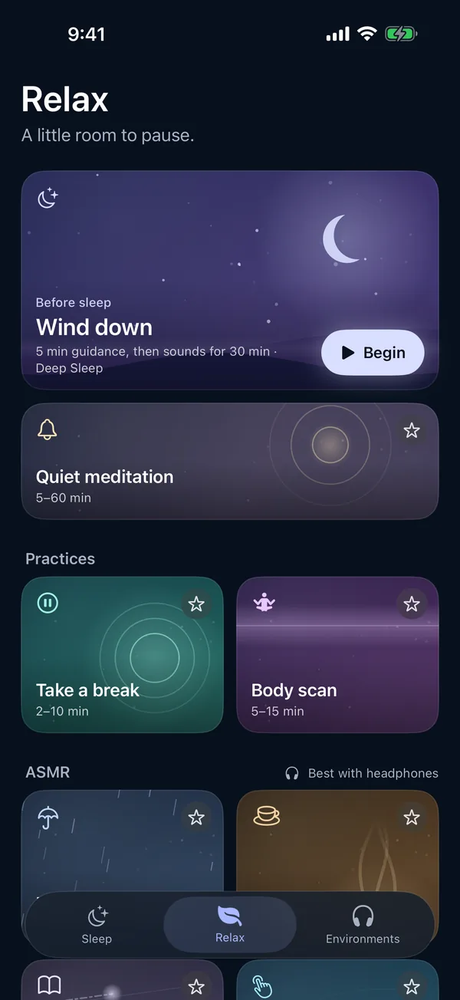

Meditation timer with singing bowls
A meditation timer keeps the time so you don't have to look at a clock: it gives you a moment to settle, can ring a bell at intervals, and rings again at the end. Singing bowls give the sitting a soft, sustained sound in place of silence.
Moonrain is a free sleep-sound app for iPhone, iPad and Apple silicon Macs. Its Relax tab has a meditation timer called Quiet meditation, and it works completely offline: no account, no ads, no subscription and no tracking.
In the app · Quiet meditation
- Length5, 10, 15, 20, 30, 45 or 60 minutes
- Tibetan bowlsStruck bowls with long tails
- Quartz bowlsBinaural crystal bowls
- Singing bowl droneA bowl's hum, slowly shifting
- Deep bowlA low, slowed singing bowl
- Interval bellOff, or every 1, 2, 5 or 10 minutes
- Ending bellGentle, and optional
- PreparationNone, or 5, 10, 20 or 30 seconds
There is no spoken guidance in Quiet meditation: bowls, bells and time. It can also play over your own sound mix in place of the bowls, and the bell level and background level are set separately.

Guided practices
Wind down · 3, 5 or 10 min
Whispered guidance over soft rain, then your sounds keep playing.
Body scan · 5, 10 or 15 min
A soft brush travels head to feet beside lapping water.
Take a break · 2, 5 or 10 min
Birdsong and a gentle brook, with a gentle ending.
Relax also has a breathing guide with a soft tone and eight whispered ASMR experiences.
Questions
Is the meditation timer free?
Yes. The timer, every bowl sound and every length are included. Moonrain has no ads, no subscription and no in-app purchases.
How long can a session be?
5, 10, 15, 20, 30, 45 or 60 minutes, with an optional preparation time of 5 to 30 seconds before it starts.
Is there a voice?
No. Quiet meditation is bowls, bells and time, with no spoken guidance. Wind down, Take a break and Body scan are the guided practices.
Does it work offline?
Yes. Everything plays offline, and your sessions and history stay on your device.